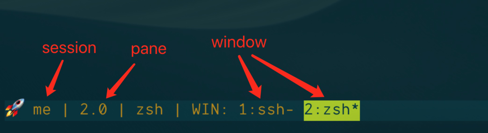

记得第一次接触tmux是在一年前，当时是为了复用终端，不想开多个item2的tab，但是后来发现完全不会用，就一直搁在那儿，直到半年前再次拿起来，开始学习一些tmux的用法，如今半年过去了，真正的明白了为什么说tmux是神器。
在用tmux之前一直都是用的iterm2（在mac上很好用的终端）原生的新开tab和分屏，其实也还好，界面看起来就像这样：

但是分屏很多之后，可以看到很多状态栏，并不是很美观，对比tmux的分屏，看起来就要hack很多，tmux的分屏界面如下：

正是基于这个原因，开始学着始使用tmux。
安装
tmux的仓库：https://github.com/tmux/tmux
首先安装tmux：
# mac安装
brew install tmux
# linux 安装
sudo apt-get install tmux
开始学习tmux之前首先要明确几个概念：
- session：概括一个任务，是一组window的集合，在任务开始前创建一个session，与此任务相关的状态都会保存在session中，通过重新连接session可以方便的继续未完成的任务。session最大的最用就是持久的保存工作状态
- window：tmux中的window其实就是我们常说的tab，在chrome中，新开一个tab就会新建一个页面，tmux也类似
- pane：单个window可以分成若干pane，就像前面使用iterm2分屏一样
简单来说就是：session包含window，window包含pane

session
新建
安装完成后，在终端直接输入tmux即可进入tmux。进入之后可以看到session的名字是0，这是因为我们直接输入tmux会创建一个无名的会话，如果想要新建session的时候给session命名，可以使用以下命令：
tmux new -s your-session-name
断开
如果想要断开当前session可以使用
tmux detach # 断开当前会话
或者使用快捷键[prefix]+d，其中prefx默认为ctrl+b
恢复
退出session之后，想要恢复之前工作的区域，直接在终端输入：
tmux attach-session -t your-session-name
# 可以简写
tmux a -t your-session-name
其中session-name是可选的，如果不输入，默认进入第一个会话。
关闭
使用完成后，要关闭，可以使用tmux kill命令，kill有以下四种：
kill-server：关闭sessions，clients和server，这个命令会将tmux创建的都关闭kill-sessionkill-windowkill-pane
# 关闭session
tmux kill-session -t your-session-name
# 关闭所有
tmux kill-server
查看
tmux list-session
# 简写
tmux ls
或者使用快捷键prefix+s查看所有session，prefix+w查看所有window。

tmux基础配置
tmux的配置在~/.tmux.conf文件中，如果没有该文件，可以先新建配置文件。
配置tmux前缀
前面介绍session使用的时候，提到过一些快捷键，可以看到都是prefix+xxx的形式，这里的prefix是tmux的前缀键，默认为ctrl+b，只有按下prefix，才会激活tmux，然后再按其他键进行tmux操作，这样做的一个好处是可以有效的避免和其他应用快捷键的冲突。
但是如果经常用tmux，就会发现ctrl和b这两个键按的不是很舒服，我们是否可以修改一个更加舒服的前缀键呢？当然是可以的，只需要在tmux的配置文件中解绑原有的prefix并修改成我们自定义的即可。配置如下：
set -g prefix C-a
# 解绑原有的prefix
unbind C-b
bind C-a send-prefix
配置完成后，需要重启tmux，或者按下ctrl+b，然后输入:进入命令模式，输入：
source-file ~/.tmux.conf
或者我们给让配置生效添加快捷键：
bind r source-file $HOME/.tmux.conf \; display-message 'Config reloaded'
这样，直接输入prefix+r就可以让配置生效。
分屏
在tmux中，水平和竖直分屏默认快捷键为prefix+" 和 prefix+%，这两个键可以说很少用而且不容易按到，我们可以自定义自己习惯的快捷键，对于对vim熟悉的用户，可以将其设置为跟vim一样的快捷键：
bind C-h splitw -v -c '#{pane_current_path}'
bind C-v splitw -h -c '#{pane_current_path}'
这里的splitw其实是split-window的缩写，-c '#{pane_current_path}'表示在打开新pane的时候，默认进入当前目录。
切换pane
在iterm2中，切换标签的快捷键是commond+option+方向键或commond+[或commond+]，相应的在tmux中，切换pane默认快捷为prefix+方向键但是方向键本身和ctrl离的太远，操作不方便，同样的我们可以设置自己喜欢的快捷键，例如设置跟vim一样的快捷键（这里多说一句，其实在vim中最常用的控制方向的键就是hjkl，如果习惯使用vim，可以设置tmux与之相同快捷键）。
bind h select-pane -L # up
bind j select-pane -D # down
bind k select-pane -U # left
bind l select-pane -R # right
开启鼠标支持
在刚上手tmux的时候，总觉得各种命令很麻烦，而且不好记，如果支持鼠标就更好了，其实想要支持鼠标，只需要在配置文件中开启即可：
set-option -g mouse on
开启鼠标之后，切换pane可以直接点击激活，调整分屏大小可以直接拖拽实现。
当然了，既然使用了tmux，目的就不只是界面好看而已，而是要提高效率，所以尽量少用鼠标😏
调整pane
如果想要使用快捷键调节pane大小，同样可以设置快捷键实现：
bind H resize-pane -L 10 # 向左扩展10
bind L resize-pane -R 10 # 向右扩展10
bind K resize-pane -U 5 # 向上扩展5
bind J resize-pane -D 5 # 向下扩展5
这样通过prefix+HJKL实现pane的扩展
附
| 前缀 | 指令 | 描述 |
|---|---|---|
| Ctrl+b | ? | 显示快捷键帮助文档 |
| Ctrl+b | d | 断开当前会话 |
| Ctrl+b | D | 选择要断开的会话 |
| Ctrl+b | Ctrl+z | 挂起当前会话 |
| Ctrl+b | r | 强制重载当前会话 |
| Ctrl+b | s | 显示会话列表用于选择并切换 |
| Ctrl+b | : | 进入命令行模式，此时可直接输入ls等命令 |
| Ctrl+b | [ | 进入复制模式，按q退出 |
| Ctrl+b | ] | 粘贴复制模式中复制的文本 |
| Ctrl+b | ~ | 列出提示信息缓存 |
window
| 前缀 | 指令 | 描述 |
|---|---|---|
| Ctrl+b | c | 新建窗口 |
| Ctrl+b | & | 关闭当前窗口（关闭前需输入y or n确认） |
| Ctrl+b | 0~9 | 切换到指定窗口 |
| Ctrl+b | p | 切换到上一窗口 |
| Ctrl+b | n | 切换到下一窗口 |
| Ctrl+b | w | 打开窗口列表，用于且切换窗口 |
| Ctrl+b | , | 重命名当前窗口 |
| Ctrl+b | . | 修改当前窗口编号（适用于窗口重新排序） |
| Ctrl+b | f | 快速定位到窗口（输入关键字匹配窗口名称） |
pane
| 前缀 | 指令 | 描述 |
|---|---|---|
| Ctrl+b | " | 当前面板上下一分为二，下侧新建面板 |
| Ctrl+b | % | 当前面板左右一分为二，右侧新建面板 |
| Ctrl+b | x | 关闭当前面板（关闭前需输入y or n确认） |
| Ctrl+b | z | 最大化当前面板，再重复一次按键后恢复正常（v1.8版本新增） |
| Ctrl+b | ! | 将当前面板移动到新的窗口打开（原窗口中存在两个及以上面板有效） |
| Ctrl+b | ; | 切换到最后一次使用的面板 |
| Ctrl+b | q | 显示面板编号，在编号消失前输入对应的数字可切换到相应的面板 |
| Ctrl+b | { | 向前置换当前面板 |
| Ctrl+b | } | 向后置换当前面板 |
| Ctrl+b | Ctrl+o | 顺时针旋转当前窗口中的所有面板 |
| Ctrl+b | 方向键 | 移动光标切换面板 |
| Ctrl+b | o | 选择下一面板 |
| Ctrl+b | 空格键 | 在自带的面板布局中循环切换 |
| Ctrl+b | Alt+方向键 | 以5个单元格为单位调整当前面板边缘 |
| Ctrl+b | Ctrl+方向键 | 以1个单元格为单位调整当前面板边缘（Mac下被系统快捷键覆盖） |
| Ctrl+b | t | 显示时钟前缀 |
| — | — | — |
| Ctrl+b | ? | 显示快捷键帮助文档 |
| Ctrl+b | d | 断开当前会话 |
| Ctrl+b | D | 选择要断开的会话 |
| Ctrl+b | Ctrl+z | 挂起当前会话 |
| Ctrl+b | r | 强制重载当前会话 |
| Ctrl+b | s | 显示会话列表用于选择并切换 |
| Ctrl+b | : | 进入命令行模式，此时可直接输入ls等命令 |
| Ctrl+b | [ | 进入复制模式，按q退出 |
| Ctrl+b | ] | 粘贴复制模式中复制的文本 |
| Ctrl+b | ~ | 列出提示信息缓存 |
表二：窗口（window）指令。
| 前缀 | 指令 | 描述 |
|---|---|---|
| Ctrl+b | c | 新建窗口 |
| Ctrl+b | & | 关闭当前窗口（关闭前需输入y or n确认） |
| Ctrl+b | 0~9 | 切换到指定窗口 |
| Ctrl+b | p | 切换到上一窗口 |
| Ctrl+b | n | 切换到下一窗口 |
| Ctrl+b | w | 打开窗口列表，用于且切换窗口 |
| Ctrl+b | , | 重命名当前窗口 |
| Ctrl+b | . | 修改当前窗口编号（适用于窗口重新排序） |
| Ctrl+b | f | 快速定位到窗口（输入关键字匹配窗口名称） |
表三：面板（pane）指令。
| 前缀 | 指令 | 描述 |
|---|---|---|
| Ctrl+b | " | 当前面板上下一分为二，下侧新建面板 |
| Ctrl+b | % | 当前面板左右一分为二，右侧新建面板 |
| Ctrl+b | x | 关闭当前面板（关闭前需输入y or n确认） |
| Ctrl+b | z | 最大化当前面板，再重复一次按键后恢复正常（v1.8版本新增） |
| Ctrl+b | ! | 将当前面板移动到新的窗口打开（原窗口中存在两个及以上面板有效） |
| Ctrl+b | ; | 切换到最后一次使用的面板 |
| Ctrl+b | q | 显示面板编号，在编号消失前输入对应的数字可切换到相应的面板 |
| Ctrl+b | { | 向前置换当前面板 |
| Ctrl+b | } | 向后置换当前面板 |
| Ctrl+b | Ctrl+o | 顺时针旋转当前窗口中的所有面板 |
| Ctrl+b | 方向键 | 移动光标切换面板 |
| Ctrl+b | o | 选择下一面板 |
| Ctrl+b | 空格键 | 在自带的面板布局中循环切换 |
| Ctrl+b | Alt+方向键 | 以5个单元格为单位调整当前面板边缘 |
| Ctrl+b | Ctrl+方向键 | 以1个单元格为单位调整当前面板边缘（Mac下被系统快捷键覆盖） |
| Ctrl+b | t | 显示时钟 |